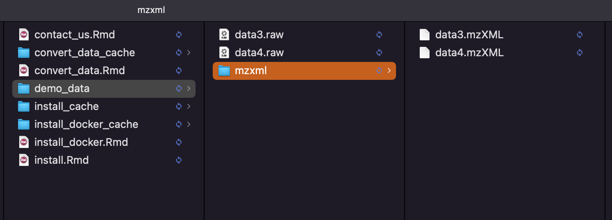

library(massconverter)11 Convert data using massconverter
11.1 Introduction
massconverter is a package in tidymass project which can be used to convert mass spectrometry raw data based on docker image of pwid.
Now
massconverteris only supports mac or Linux OS.
11.2 Data preparation
Please place the raw data in one folder according to MS1 and MS2. Then you can convert them using massconverter package.
11.3 Pull pwiz docker
Please run docker first.
We need the docker image: https://hub.docker.com/r/chambm/pwiz-skyline-i-agree-to-the-vendor-licenses. So first we need use the docker_pull_pwiz() to pull this image.
docker_pull_pwiz()If you want to pull the latest version, set force = TRUE
docker_pull_pwiz(force = TRUE)11.4 Set massconvert parameters
The we need to set parameters for massconvert.
parameter =
massconverter::create_msconvert_parameter(
output_format = "mzXML",
binary_encoding_precision = "32",
zlib = TRUE,
write_index = TRUE,
peak_picking_algorithm = "cwt",
vendor_mslevels = c(1, NA),
cwt_mslevels = c(1, NA),
cwt_min_snr = 0.1,
cwt_min_peak_spacing = 0.1,
subset_polarity = "positive",
subset_scan_number = c(NA, NA),
subset_scan_time = c(60, 300),
subset_mslevels = c(1, 2),
zero_samples_mode = "removeExtra",
zero_samples_mslevels = c(1, NA),
zero_samples_add_missing_flanking_zero_count = 5
)parameter--------------------
pacakge_name: massconverter
function_name: create_msconvert_parameter
time: 2025-07-20 19:24:59.612127
parameters:
output_format : mzXML
binary_encoding_precision : 32
zlib : TRUE
write_index : TRUE
peak_picking_algorithm : cwt
vendor_mslevels : c(1, NA)
cwt_mslevels : c(1, NA)
cwt_min_snr : 0.1
cwt_min_peak_spacing : 0.1
subset_polarity : positive
subset_scan_number : c(NA, NA)
subset_scan_time : c(60, 300)
subset_mslevels : c(1, 2)
zero_samples_mode : removeExtra
zero_samples_mslevels : c(1, NA)
zero_samples_add_missing_flanking_zero_count : 5 11.5 Convert data
Just put the raw data into one folder, and then begin to convert data.
Here we use the demo data, please download them here. And then put them in one folder named as demo_data/raw_data.
convert_raw_data(input_path = "demo_data/raw_data",
output_path = "demo_data/mzxml",
msconvert_parameter = parameter,
docker_parameters = c(),
process_all = FALSE)Then the converted data will be in the demo_data/mzxml

11.6 Bash code
If you want to run it in bash, you can also use the get_run_code() to get the code that can run in bash.
get_run_code(
input_path = "demo_data/raw_data",
output_path = "demo_data/mzxml",
msconvert_parameter = parameter,
docker_parameters = c(),
process_all = FALSE
)NULL11.7 pwiz
This is a docker image of of proteowizard.
Just type this in terminal:
docker run -it --rm chambm/pwiz-skyline-i-agree-to-the-vendor-licenses wine msconvert --help11.8 Detailed help of msconvert
Convert mass spec data file formats.
Return value: # of failed files.
Options:
-f [ --filelist ] arg : specify text file containing filenames
-o [ --outdir ] arg (=.) : set output directory ('-' for stdout)
[.]
-c [ --config ] arg : configuration file (optionName=value)
--outfile arg : Override the name of output file.
-e [ --ext ] arg : set extension for output files
[mzML|mzXML|mgf|txt|mz5]
--mzML : write mzML format [default]
--mzXML : write mzXML format
--mz5 : write mz5 format
--mgf : write Mascot generic format
--text : write ProteoWizard internal text format
--ms1 : write MS1 format
--cms1 : write CMS1 format
--ms2 : write MS2 format
--cms2 : write CMS2 format
-v [ --verbose ] : display detailed progress information
--64 : set default binary encoding to 64-bit
precision [default]
--32 : set default binary encoding to 32-bit
precision
--mz64 : encode m/z values in 64-bit precision
[default]
--mz32 : encode m/z values in 32-bit precision
--inten64 : encode intensity values in 64-bit
precision
--inten32 : encode intensity values in 32-bit
precision [default]
--noindex : do not write index
-i [ --contactInfo ] arg : filename for contact info
-z [ --zlib ] : use zlib compression for binary data
--numpressLinear [=arg(=2e-09)] : use numpress linear prediction
compression for binary mz and rt data
(relative accuracy loss will not exceed
given tolerance arg, unless set to 0)
--numpressLinearAbsTol [=arg(=-1)] : desired absolute tolerance for linear
numpress prediction (e.g. use 1e-4 for a
mass accuracy of 0.2 ppm at 500 m/z,
default uses -1.0 for maximal accuracy).
Note: setting this value may substantially
reduce file size, this overrides relative
accuracy tolerance.
--numpressPic : use numpress positive integer
compression for binary intensities
(absolute accuracy loss will not exceed
0.5)
--numpressSlof [=arg(=0.0002)] : use numpress short logged float
compression for binary intensities
(relative accuracy loss will not exceed
given tolerance arg, unless set to 0)
-n [ --numpressAll ] : same as --numpressLinear --numpressSlof
(see https://github.com/fickludd/ms-numpre
ss for more info)
-g [ --gzip ] : gzip entire output file (adds .gz to
filename)
--filter arg : add a spectrum list filter
--chromatogramFilter arg : add a chromatogram list filter
--merge : create a single output file from
multiple input files by merging file-level
metadata and concatenating spectrum lists
--runIndexSet arg : for multi-run sources, select only the
specified run indices
--simAsSpectra : write selected ion monitoring as
spectra, not chromatograms
--srmAsSpectra : write selected reaction monitoring as
spectra, not chromatograms
--combineIonMobilitySpectra : write all ion mobility or Waters SONAR
bins/scans in a frame/block as one
spectrum instead of individual spectra
--acceptZeroLengthSpectra : some vendor readers have an efficient
way of filtering out empty spectra, but it
takes more time to open the file
--ignoreMissingZeroSamples : some vendor readers do not include zero
samples in their profile data; the default
behavior is to add the zero samples but
this option disables that
--ignoreUnknownInstrumentError : if true, if an instrument cannot be
determined from a vendor file, it will not
be an error
--stripLocationFromSourceFiles : if true, sourceFile elements will be
stripped of location information, so the
same file converted from different
locations will produce the same mzML
--stripVersionFromSoftware : if true, software elements will be
stripped of version information, so the
same file converted with different
versions will produce the same mzML
--singleThreaded [=arg(=1)] (=2) : if true, reading and writing spectra
will be done on a single thread
--help : show this message, with extra detail on
filter options
--help-filter arg : name of a single filter to get detailed
help for
FILTER OPTIONS
Note: Filters are applied sequentially in the order that you list them, and the
sequence order
can make a large difference in your output. In particular, the peakPicking
filter must be first
in line if you wish to use the vendor-supplied centroiding algorithms since
these use the vendor
DLLs, which only operate on raw untransformed data.
Many filters take 'int_set' arguments. An 'int_set' is a list of intervals of
the form [a,b] or a[-][b].
For example '[0,3]' and '0-3' both mean 'the set of integers from 0 to 3
inclusive'.
'1-' means 'the set of integers from 1 to the largest allowable number'.
'9' is also an integer set, equivalent to '[9,9]'.
'[0,2] 5-7' is the set '0 1 2 5 6 7'.
index <index_value_set>
Selects spectra by index - an index value 0-based numerical order in which the
spectrum appears in the input.
<index_value_set> is an int_set of indexes.
id <id_set>
Selects one or more spectra by native IDs separated by semicolon (;).
<id_set> is a semicolon-delimited set of ids.
msLevel <mslevels>
This filter selects only spectra with the indicated <mslevels>, expressed as an
int_set.
chargeState <charge_states>
This filter keeps spectra that match the listed charge state(s), expressed as an
int_set. Both known/single and possible/multiple charge states are tested. Use
0 to include spectra with no charge state at all.
precursorRecalculation
This filter recalculates the precursor m/z and charge for MS2 spectra. It looks
at the prior MS1 scan to better infer the parent mass. However, it only works
on orbitrap and FT data,although it does not use any 3rd party (vendor DLL)
code. Since the time the code was written, Thermo has since fixed up its own
estimation in response, so it's less critical than it used to be (though can
still be useful).
mzRefiner input1.pepXML input2.mzid [msLevels=<1->]
[thresholdScore=<CV_Score_Name>] [thresholdValue=<floatset>]
[thresholdStep=<float>] [maxSteps=<count>]
This filter recalculates the m/z and charges, adjusting precursors for MS2
spectra and spectra masses for MS1 spectra. It uses an ident file with a
threshold field and value to calculate the error and will then choose a shifting
mechanism to correct masses throughout the file. It only works on orbitrap, FT,
and TOF data. It is designed to work on mzML files created by msconvert from a
single dataset (single run), and with an identification file created using that
mzML file. It does not use any 3rd party (vendor DLL) code. Recommended Scores
and thresholds: MS-GF:SpecEValue,-1e-10 (<1e-10); MyriMatch:MVH,35- (>35);
xcorr,3- (>3)
lockmassRefiner mz=<real> mzNegIons=<real (mz)> tol=<real (1.0 Daltons)>
For Waters data, adjusts m/z values according to the specified lockmass m/z and
tolerance. Distinct m/z value for negative ions is optional and defaults to the
given mz value. For other data, currently does nothing.
precursorRefine
This filter recalculates the precursor m/z and charge for MS2 spectra. It looks
at the prior MS1 scan to better infer the parent mass. It only works on
orbitrap, FT, and TOF data. It does not use any 3rd party (vendor DLL) code.
peakPicking [<PickerType> [snr=<minimum signal-to-noise ratio>]
[peakSpace=<minimum peak spacing>] [msLevel=<ms_levels>]]
This filter performs centroiding on spectrawith the selected <ms_levels>,
expressed as an int_set. The value for <PickerType> must be "cwt" or "vendor":
when <PickerType> = "vendor", vendor (Windows DLL) code is used if available.
IMPORTANT NOTE: since this filter operates on the raw data through the vendor
DLLs, IT MUST BE THE FIRST FILTER IN ANY LIST OF FILTERS when "vendor" is used.
The other option for PickerType is "cwt", which uses ProteoWizard's
wavelet-based algorithm for performing peak-picking with a wavelet-space
signal-to-noise ratio of <signal-to-noise ratio>.
Defaults:
<PickerType> is a low-quality (non-vendor) local maxima algorithm
<signal-to-noise ratio> = 1.0
<minimum peak spacing> = 0.1
<ms_levels> = 1-
scanNumber <scan_numbers>
This filter selects spectra by scan number. Depending on the input data type,
scan number and spectrum index are not always the same thing - scan numbers are
not always contiguous, and are usually 1-based.
<scan_numbers> is an int_set of scan numbers to be kept.
scanEvent <scan_event_set>
This filter selects spectra by scan event. For example, to include all scan
events except scan event 5, use filter "scanEvent 1-4 6-". A "scan event" is a
preset scan configuration: a user-defined scan configuration that specifies the
instrumental settings in which a spectrum is acquired. An instrument may cycle
through a list of preset scan configurations to acquire data. This is a more
generic term for the Thermo "scan event", which is defined in the Thermo
Xcalibur glossary as: "a mass spectrometer scan that is defined by choosing the
necessary scan parameter settings. Multiple scan events can be defined for each
segment of time.".
scanTime <scan_time_range>
This filter selects only spectra within a given time range.
<scan_time_range> is a time range, specified in seconds. For example, to
select only spectra within the second minute of the run, use "scanTime
[60-119.99]".
sortByScanTime
This filter reorders spectra, sorting them by ascending scan start time.
stripIT
This filter rejects ion trap data spectra with MS level 1.
metadataFixer
This filter is used to add or replace a spectra's TIC/BPI metadata, usually
after peakPicking where the change from profile to centroided data may make the
TIC and BPI values inconsistent with the revised scan data. The filter
traverses the m/z intensity arrays to find the sum and max. For example, in
msconvert it can be used as: --filter "peakPicking true 1-" --filter
metadataFixer. It can also be used without peak picking for some strange
results. Certainly adding up all the samples of profile data to get the TIC is
just wrong, but we do it anyway.
titleMaker <format_string>
This filter adds or replaces spectrum titles according to specified
<format_string>. You can use it, for example, to customize the TITLE line in MGF
output in msconvert. The following keywords are recognized:
"<RunId>" - prints the spectrum's Run id - for example, "Data.d" from
"C:/Agilent/Data.d/AcqData/mspeak.bin"
"<Index>" - prints the spectrum's index
"<Id>" - prints the spectrum's nativeID
"<SourcePath>" - prints the path of the spectrum's source data
"<ScanNumber>" - if the nativeID can be represented as a single number,
prints that number, else index+1
"<ActivationType>" - for the first precursor, prints the spectrum's
"dissociation method" value
"<IsolationMz>" - for the first precursor, prints the the spectrum's
"isolation target m/z" value
"<PrecursorSpectrumId>" - prints the nativeID of the spectrum of the first
precursor
"<SelectedIonMz>" - prints the m/z value of the first selected ion of the
first precursor
"<ChargeState>" - prints the charge state for the first selected ion of the
first precursor
"<SpectrumType>" - prints the spectrum type
"<ScanStartTimeInSeconds>" - prints the spectrum's first scan's start time,
in seconds
"<ScanStartTimeInMinutes>" - prints the spectrum's first scan's start time,
in minutes
"<BasePeakMz>" - prints the spectrum's base peak m/z
"<BasePeakIntensity>" - prints the spectrum's base peak intensity
"<TotalIonCurrent>" - prints the spectrum's total ion current
"<MsLevel>" - prints the spectrum's MS level
For example, to create a TITLE line in msconvert MGF output with the
"name.first_scan.last_scan.charge" style (eg. "mydata.145.145.2"), use
--filter "titleMaker <RunId>.<ScanNumber>.<ScanNumber>.<ChargeState>"
threshold <type> <threshold> <orientation> [<mslevels>]
This filter keeps data whose values meet various threshold criteria.
<type> must be one of:
count - keep the n=<threshold> [most|least] intense data points, where n
is an integer. Any data points with the same intensity as the nth [most|least]
intense data point are removed.
count-after-ties - like "count", except that any data points with the same
intensity as the nth [most|least] data point are retained.
absolute - keep data whose absolute intensity is [more|less] than
<threshold>
bpi-relative - keep data whose intensity is [more|less] than <threshold>
percent of the base peak intensity. Percentage is expressed as a number between
0 and 1, for example 75 percent is "0.75".
tic-relative - keep data whose individual intensities are [more|less] than
<threshold> percent of the total ion current for the scan. Again, precentage is
expressed as a number between 0 and 1.
tic-cutoff - keep the [most|least] intense data points up to <threshold>
percent of the total ion current. That is, the TIC of the retained points is
<threshold> percent (expressed as a number between 0 and 1) of the original TIC.
<orientation> must be one of:
most-intense (keep m/z-intensity pairs above the threshold)
least-intense (keep m/z-intensity pairs below the threshold)
<mslevels> is an optional int_set of MS levels - if provided, only scans with
those MS levels will be filtered, and others left untouched.
mzWindow <mzrange>
keeps mz/intensity pairs whose m/z values fall within the specified range.
<mzrange> is formatted as [mzLow,mzHigh]. For example, in msconvert to retain
data in the m/z range 100.1 to 307.5, use --filter "mzWindow [100.1,307.5]" .
mzPrecursors <precursor_mz_list> [mzTol=<mzTol (10 ppm)>]
[target=<selected|isolated> (selected)] [mode=<include|exclude (include)>]
Filters spectra based on precursor m/z values found in the <precursor_mz_list>,
with <mzTol> m/z tolerance. To retain only spectra with precursor m/z values of
123.4 and 567.8, use --filter "mzPrecursors [123.4,567.8]". Note that this
filter will drop MS1 scans unless you include 0.0 in the list of precursor
values. <mzTol> is optional and must be specified as a number and units (PPM
or MZ). For example, "5 PPM" or "2.1 MZ".
<target> is optional and must be either "selected" (the default) or
"isolated". It determines whether the isolated m/z or the selected m/z is used
for the "precursor m/z"
<mode> is optional and must be either "include" (the default) or "exclude".
If "exclude" is used, the filter drops spectra that match the various criteria
instead of keeping them.
defaultArrayLength <peak_count_range>
Keeps only spectra with peak counts within <peak_count_range>, expressed as an
int_set. (In mzML the peak list length is expressed as "defaultArrayLength",
hence the name.) For example, to include only spectra with 100 or more peaks,
you would use filter "defaultArrayLength 100-" .
zeroSamples <mode> [<MS_levels>]
This filter deals with zero values in spectra - either removing them, or adding
them where they are missing.
<mode> is either removeExtra or addMissing[=<flankingZeroCount>] .
<MS_levels> is optional, when provided (as an int_set) the filter is applied
only to spectra with those MS levels.
When <mode> is "removeExtra", consecutive zero intensity peaks are removed from
spectra. For example, a peak list
"100.1,1000 100.2,0 100.3,0 100.4,0 100.5,0 100.6,1030"
would become
"100.1,1000 100.2,0 100.5,0 100.6,1030"
and a peak list
"100.1,0 100.2,0 100.3,0 100.4,0 100.5,0 100.6,1030 100.7,0 100.8,1020 100.9,0
101.0,0"
would become
"100.5,0 100.6,1030 100.7,0 100.8,1020 100.9,0"
When <mode> is "addMissing", each spectrum's sample rate is automatically
determined (the rate can change but only gradually) and flanking zeros are
inserted around non-zero data points. The optional [=<flankingZeroCount>] value
can be used to limit the number of flanking zeros, otherwise the spectrum is
completely populated between nonzero points. For example, to make sure spectra
have at least 5 flanking zeros around runs on nonzero points, use filter
"addMissing=5".
mzPresent <mz_list> [mzTol=<tolerance> (0.5 mz)] [type=<type> (count)]
[threshold=<threshold> (10000)] [orientation=<orientation> (most-intense)]
[mode=<include|exclude (include)>]
This filter includes or excludes spectra depending on whether the specified
peaks are present.
<mz_list> is a list of mz values of the form [mz1,mz2, ... mzn] (for example,
"[100, 300, 405.6]"). Spectra which contain peaks within <tolerance> of any of
these values will be kept.
<tolerance> is specified as a number and units (PPM or MZ). For example, "5
PPM" or "2.1 MZ".
<type>, <threshold>, and <orientation> operate as in the "threshold" filter
(see above).
<include|exclude> is optional and has value "include" (the default) or
"exclude". If "exclude" is used the filter drops spectra that match the various
criteria instead of keeping them.
scanSumming [precursorTol=<precursor tolerance>] [scanTimeTol=<scan time
tolerance in seconds>] [ionMobilityTol=<ion mobility tolerance>]
This filter sums MS2 sub-scans whose precursors are within <precursor tolerance>
(default: 0.05 m/z), <scan time tolerance> (default: 10 s), and for ion mobility
data, <ion mobility tolerance> (default 0.01 ms or vs/cm^2). It is intended for
some Waters DDA data and Bruker PASEF data, where sub-scans should be summed
together to increase the SNR.
thermoScanFilter <exact|contains> <include|exclude> <match string>
Includes or excludes scans based on the scan filter (Thermo instrumentation
only).
<exact|contains>: If "exact" is set, spectra only match the search string if
there is an exact match.
If "contains" is set, spectra match the search string if
the search string is
contained somewhere in the scan filter.
<include|exclude>: If "include" is set, only spectra that match the filter
will be kept.
If "exclude" is set, only spectra that do NOT match the
filter will be kept.
used the filter drops data points that match the various
criteria instead of keeping them. <match string> specifies the search string
to be compared to each scan filter (it may contain spaces)
MS2Denoise [<peaks_in_window> [<window_width_Da>
[multicharge_fragment_relaxation]]]
Noise peak removal for spectra with precursor ions.
<peaks_in_window> - the number peaks to select in moving window, default is
6.
<window_width_Da> - the width of the window in Da, default is 30.
<multicharge_fragment_relaxation> - if "true" (the default), allows more data
below multiply charged precursors.
The filter first removes any m/z values above the precursor mass minus the mass
of glycine.
It then removes any m/z values within .5 Da of the unfragmented precursor mass.
Finally it retains only the <peaks_in_window> most intense ions within a sliding
window of <window_width_Da>.
If <multicharge_fragment_relaxation> is true, allows more peaks at lower mass
(i.e. below precursor).
If <window_width_Da> is set to 0, the window size defaults to the highest
observed mass in the spectrum (this leaving only <peaks_in_window> ions in the
output spectrum).
Reference: "When less can yield more - Computational preprocessing of MS/MS
spectra for peptide identification", Bernhard Y. Renard, Marc Kirchner, Flavio
Monigatti, Alexander R. Ivanov, Juri Rappsilber, Dominic Winter, Judith A. J.
Steen, Fred A. Hamprecht and Hanno Steen Proteomics, 9, 4978-4984, 2009.
MS2Deisotope [hi_res [mzTol=<mzTol>]] [Poisson [minCharge=<minCharge>]
[maxCharge=<maxCharge>]]
Deisotopes ms2 spectra using the Markey method or a Poisson model.
For the Markey method, hi_res sets high resolution mode to "false" (the
default) or "true".
<mzTol> sets the mz tolerance. It defaults to .01 in high resoltion mode,
otherwise it defaults to 0.5.
Poisson activates a Poisson model based on the relative intensity
distribution.
<minCharge> (default: 1) and <maxCharge> (default: 3) define the charge search
range within the Poisson deisotoper. (default: 1)
ETDFilter [<removePrecursor> [<removeChargeReduced> [<removeNeutralLoss>
[<blanketRemoval> [<matchingTolerance> ]]]]]
Filters ETD MSn spectrum data points, removing unreacted precursors,
charge-reduced precursors, and neutral losses.
<removePrecursor> - if "true", remove unreacted precursor (default is "true")
<removeChargeReduced> - if "true", remove charge reduced precursor (default is
"true")
<removeNeutralLoss> - if "true", remove neutral loss species from charge
reduced precursor (default is "true")
<blanketRemoval> - if "true", remove neutral losses in a charge-scaled 60 Da
swath rather than only around known loss species (default is "true")
<matchingTolerance> - specify matching tolerance in m/z or ppm (examples: "3.1
mz" (the default) or "2.2 ppm")
demultiplex massError=<tolerance and units, eg 0.5Da (default 10ppm)>
nnlsMaxIter=<int (50)> nnlsEps=<real (1e-10)> noWeighting=<bool (false)>
demuxBlockExtra=<real (0)> variableFill=<bool (false)> noSumNormalize=<bool
(false)> optimization=<(none)|overlap_only> interpolateRT=<bool (true)>
minWindowSize=<real (0.2)>
Separates overlapping or MSX multiplexed spectra into several demultiplexed
spectra by inferring from adjacent multiplexed spectra. Optionally handles
variable fill times (for Thermo).
chargeStatePredictor [overrideExistingCharge=<true|false (false)>]
[maxMultipleCharge=<int (3)>] [minMultipleCharge=<int (2)>]
[singleChargeFractionTIC=<real (0.9)>] [maxKnownCharge=<int (0)>]
[makeMS2=<true|false (false)>]
Predicts MSn spectrum precursors to be singly or multiply charged depending on
the ratio of intensity above and below the precursor m/z, or optionally using
the "makeMS2" algorithm
<overrideExistingCharge> : always override existing charge information
(default:"false")
<maxMultipleCharge> (default 3) and <minMultipleCharge> (default 2): range of
values to add to the spectrum's existing "MS_possible_charge_state" values.If
these are the same values, the spectrum's MS_possible_charge_state values are
removed and replaced with this single value.
<singleChargeFractionTIC> : is a percentage expressed as a value between 0 and
1 (the default is 0.9, or 90 percent). This is the value used as the previously
mentioned ratio of intensity above and below the precursor m/z.
<maxKnownCharge> (default is 0, meaning no maximum): the maximum charge
allowed for "known" charges even if override existing charge is false. This
allows overriding junk charge calls like +15 peptides.
<algorithmMakeMS2> : default is "false", when set to "true" the "makeMS2"
algorithm is used instead of the one described above.
turbocharger [minCharge=<minCharge>] [maxCharge=<maxCharge>]
[precursorsBefore=<before>] [precursorsAfter=<after>] [halfIsoWidth=<half-width
of isolation window>] [defaultMinCharge=<defaultMinCharge>]
[defaultMaxCharge=<defaultMaxCharge>] [useVendorPeaks=<useVendorPeaks>]
Predicts MSn spectrum precursor charge based on the isotopic distribution
associated with the survey scan(s) of the selected precursor
<maxCharge> (default: 8) and <minCharge> (default 1): defines range of
possible precursor charge states.
<before> (default: 2) and <after> (default 0): number of survey (MS1) scans to
check for precursor isotopes, before and after a MS/MS in retention time.
<half-width of isolation window> (default: 1.25): half-width of the isolation
window (in Th.) from which precursor is derived. Window is centered at target
m/z with a total size of +/- the value entered.
<defaultMinCharge> (default: 0) and <defaultMaxCharge> (default: 0): in the
event that no isotope is found in the isolation window, a range of charges
between these two values will be assigned to the spectrum. If both values are
left at zero, no charge will be assigned to the spectrum.
activation <precursor_activation_type>
Keeps only spectra whose precursors have the specifed activation type. It
doesn't affect non-MS spectra, and doesn't affect MS1 spectra. Use it to create
output files containing only ETD or CID MSn data where both activation modes
have been interleaved within a given input vendor data file (eg: Thermo's
Decision Tree acquisition mode).
<precursor_activation_type> is any one of: ETD CID SA HCD HECID BIRD ECD
IRMPD PD PSD PQD SID or SORI.
collisionEnergy low=<real> high=<real> [mode=<include|exclude (include)>]
[acceptNonCID=<true|false (true)] [acceptMissingCE=<true|false (false)]
Includes/excludes MSn spectra with CID collision energy within the specified
range [<low>, <high>].
Non-MS and MS1 spectra are always included. Non-CID MS2s and MS2s with
missing CE are optionally included/excluded.
analyzer <analyzer>
This filter keeps only spectra with the indicated mass analyzer type.
<analyzer> is any one of "quad" "orbi" "FT" "IT" or "TOF".
Sometimes people use the terms FT and Orbi interchangeably, which is OK because
there are no hybrid FT+Orbi instruments - so this filter does too.
analyzerType <analyzer>
This is deprecated syntax for filtering by mass analyzer type.
<analyzer> can be "FTMS" or "ITMS".
polarity <polarity>
Keeps only spectra with scan of the selected <polarity>.
<polarity> is any one of "positive" "negative" "+" or "-".
diaUmpire params=<filepath to DiaUmpire .params file>
Separates DIA spectra into pseudo-DDA spectra using the DIA Umpire algorithm.
Examples:
# convert data.RAW to data.mzML
msconvert data.RAW
# convert data.RAW to data.mzXML
msconvert data.RAW --mzXML
# put output file in my_output_dir
msconvert data.RAW -o my_output_dir
# combining options to create a smaller mzML file, much like the old ReAdW converter program
msconvert data.RAW --32 --zlib --filter "peakPicking true 1-" --filter "zeroSamples removeExtra"
# extract scan indices 5...10 and 20...25
msconvert data.RAW --filter "index [5,10] [20,25]"
# extract MS1 scans only
msconvert data.RAW --filter "msLevel 1"
# extract MS2 and MS3 scans only
msconvert data.RAW --filter "msLevel 2-3"
# extract MSn scans for n>1
msconvert data.RAW --filter "msLevel 2-"
# apply ETD precursor mass filter
msconvert data.RAW --filter ETDFilter
# remove non-flanking zero value samples
msconvert data.RAW --filter "zeroSamples removeExtra"
# remove non-flanking zero value samples in MS2 and MS3 only
msconvert data.RAW --filter "zeroSamples removeExtra 2 3"
# add missing zero value samples (with 5 flanking zeros) in MS2 and MS3 only
msconvert data.RAW --filter "zeroSamples addMissing=5 2 3"
# keep only HCD spectra from a decision tree data file
msconvert data.RAW --filter "activation HCD"
# keep the top 42 peaks or samples (depending on whether spectra are centroid or profile):
msconvert data.RAW --filter "threshold count 42 most-intense"
# multiple filters: select scan numbers and recalculate precursors
msconvert data.RAW --filter "scanNumber [500,1000]" --filter "precursorRecalculation"
# multiple filters: apply peak picking and then keep the bottom 100 peaks:
msconvert data.RAW --filter "peakPicking true 1-" --filter "threshold count 100 least-intense"
# multiple filters: apply peak picking and then keep all peaks that are at least 50% of the intensity of the base peak:
msconvert data.RAW --filter "peakPicking true 1-" --filter "threshold bpi-relative .5 most-intense"
# use a configuration file
msconvert data.RAW -c config.txt
# example configuration file
mzXML=true
zlib=true
filter="index [3,7]"
filter="precursorRecalculation"
Questions, comments, and bug reports:
https://github.com/ProteoWizard
support@proteowizard.org
ProteoWizard release: 3.0.21354 (9ee14c7)
Build date: Dec 20 2021 16:00:0611.9 Example of docker
docker run --rm -e WINEDEBUG=-all -v /Users/xiaotaoshen/tidymass/massconverter/vignettes/demo_data:/data -v /Users/xiaotaoshen/tidymass/massconverter/vignettes/demo_data/mzxml:/outpath chambm/pwiz-skyline-i-agree-to-the-vendor-licenses wine msconvert /data/3.raw --ignoreUnknownInstrumentError --mzML --32 --zlib --filter \"peakPicking true 1-\" --filter \"msLevel 1\" -o /outpath/11.10 Other links
https://fragpipe.nesvilab.org/docs/tutorial_convert.html
https://currentprotocols.onlinelibrary.wiley.com/doi/10.1002/0471250953.bi1324s46
https://proteowizard.sourceforge.io/tools/filters.html
https://ccms-ucsd.github.io/GNPSDocumentation/fileconversion/
https://pubmed.ncbi.nlm.nih.gov/28188540/
https://rickhelmus.github.io/patRoon/reference/convertMSFiles.html
https://www.youtube.com/watch?v=xnjvZlSlp40
https://github.com/pwilmart/PAW_pipeline/blob/master/docs/MSConvert.md
https://link.springer.com/protocol/10.1007/978-1-4939-6747-6_23
https://github.com/cran/MetabolomicsBasics/blob/master/R/msconvert.R
11.11 Session information
sessionInfo()R version 4.4.1 (2024-06-14)
Platform: aarch64-apple-darwin20
Running under: macOS 15.5
Matrix products: default
BLAS: /Library/Frameworks/R.framework/Versions/4.4-arm64/Resources/lib/libRblas.0.dylib
LAPACK: /Library/Frameworks/R.framework/Versions/4.4-arm64/Resources/lib/libRlapack.dylib; LAPACK version 3.12.0
locale:
[1] en_US.UTF-8/en_US.UTF-8/en_US.UTF-8/C/en_US.UTF-8/en_US.UTF-8
time zone: Asia/Singapore
tzcode source: internal
attached base packages:
[1] stats graphics grDevices utils datasets methods base
other attached packages:
[1] magrittr_2.0.3 massconverter_1.0.3
loaded via a namespace (and not attached):
[1] digest_0.6.37 codetools_0.2-20 fastmap_1.2.0 xfun_0.52
[5] glue_1.8.0 stringr_1.5.1 knitr_1.49 stevedore_0.9.6
[9] htmltools_0.5.8.1 rmarkdown_2.29 lifecycle_1.0.4 cli_3.6.3
[13] vctrs_0.6.5 compiler_4.4.1 purrr_1.0.2 rstudioapi_0.17.1
[17] tools_4.4.1 curl_6.0.1 evaluate_1.0.1 rlang_1.1.4
[21] jsonlite_1.8.9 crayon_1.5.3 htmlwidgets_1.6.4 stringi_1.8.4